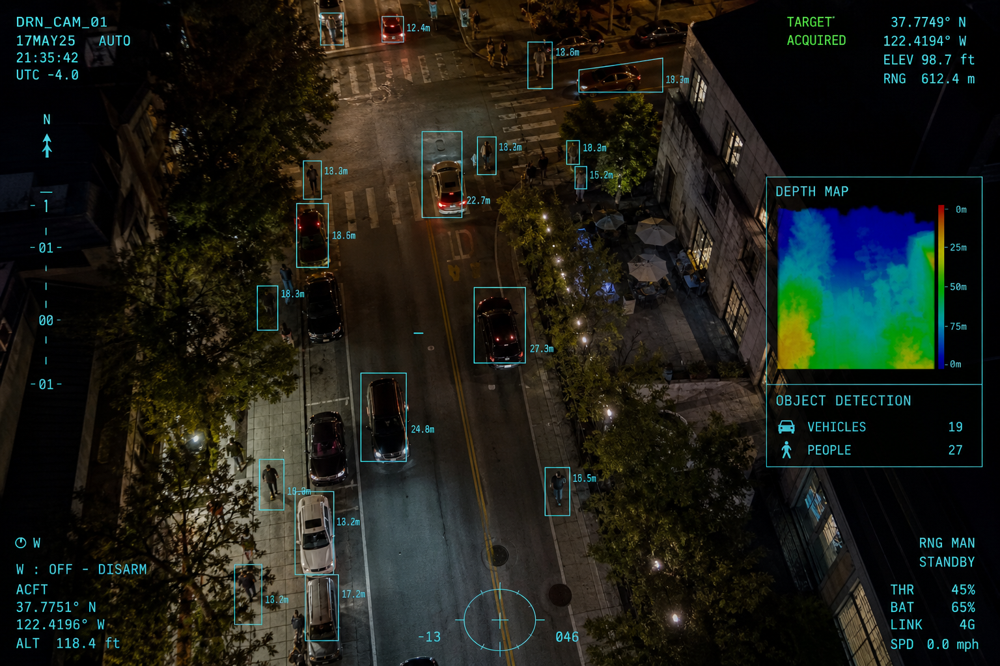
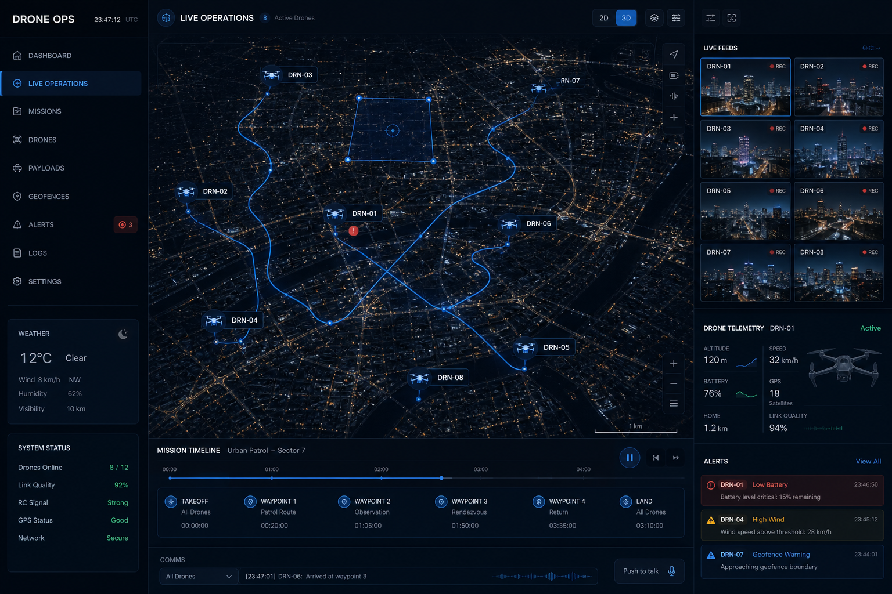
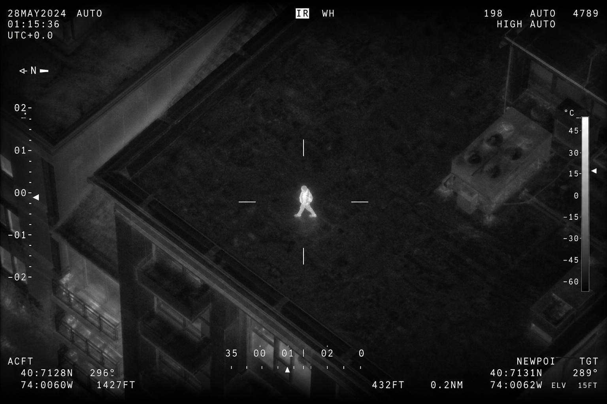
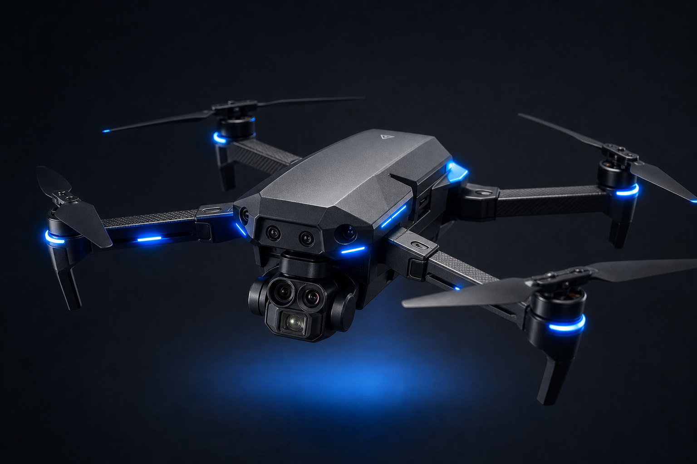

When seconds decide, launch first.
Give officers every advantage before they arrive. An AERIX DFR program puts live aerial intelligence over any call for service — automatically.
A force multiplier for your agency.
Answer calls in seconds — day or night. Stream live video to patrol and your real-time crime center, or clear low-priority calls without rolling a unit at all. More speed, more safety, more capacity, same team.

WAYFINDER ROUTINGFaster than the fastest unit.
AERIX aircraft launch in under 20 seconds and reach most scenes in under 90 — handling several calls in parallel when the night gets busy. Wayfinder plots the quickest safe route around terrain, towers and geofences, every single flight.
- Parallel response. One operator, multiple simultaneous calls.
- Route intelligence. Fastest safe path, computed onboard.
- Instant handoff. Field launch to remote pilot in one tap.

MISSION COMMANDEveryone sees the same scene.
From building interiors to city blocks, continuous live video flows to officers in the field and command staff alike. One real-time picture means safer entries, coordinated movement, and decisions made with context instead of guesswork.
Explore Mission Command
THERMAL / 640×512Every call starts with the advantage.
When the aircraft arrives first, officers begin with time and distance on their side. Pursuits get avoided. Blind entries become informed entries. And the picture holds — day, night, or total darkness.
Harborview PD: 30-second responses with 8 DocksRun DFR your way.
No two agencies are built alike. Three proven models scale from a single patrol trunk to city-wide, dock-based coverage.
Patrol-led
V10 and R5 aircraft ride in patrol vehicles. Officers launch on scene for an instant aerial or indoor view — no remote pilot required. Built for lean teams and wide rural districts.
See V10Patrol-launch, remote-fly
An officer powers on the aircraft; a remote pilot takes it from there over 5G/LTE through Mission Command. Officers stay heads-up on the call while the picture stays live.
Explore Mission CommandDock-based
Dock hives across the city keep aircraft charged and ready 24/7. Wired into CAD, the nearest drone launches the moment a call drops — for the fastest response and persistent coverage.
See Dock for V10Twenty-two weeks in, we've handled over 1,200 calls in the deployment zone and cleared 4 in 10 of them without sending an officer. The aircraft is first on scene 80% of the time — and it's been the deciding factor in over a hundred arrests.
One dock, one entertainment district, twelve hundred missions in under a year. The numbers make the argument for us.
The subject never knew the aircraft was overhead. We watched him discard the weapon, called it out to the team, and slowed everything down. Everyone went home safe — and we knew exactly where the evidence was.
Our officers were skeptical at first. Now they won't start an entry without the overhead view — they arrive with real intelligence instead of just the caller's description.
* FICTIONAL TESTIMONIALS FOR CONCEPT DEMONSTRATION
A team of aircraft on one common platform.

AERIX V10
Launches from trunks or Docks in seconds. Tracks subjects and vehicles, streams live through Mission Command, day or night.
ReadAERIX R5
Eyes inside before anyone enters. Compact, rugged, with onboard lighting and two-way audio in the room.
ReadAERIX F1
Extends DFR coverage to dozens of miles — long-distance calls, extended incidents, sustained pace.
ReadWayfinder
The safest, most efficient route to scene — around terrain, structures and geofences.
DarkSight
Zero-light obstacle avoidance for confident 24/7 operations.
Link Fusion
Point-to-point and 5G blended automatically for limitless range.
Success Services
Veterans of the badge guide your program from first dock to full scale — training, FAA waivers and all.
Let us help you stand up DFR.
Join a live 30-minute demo, fly our virtual city from your browser, or start a deployment plan with our team.
Get startedRemote piloting and continuous live-stream depend on cellular connectivity. BVLOS authorization required for remote flight. Concept demonstration content.